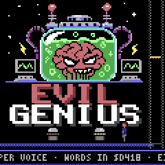
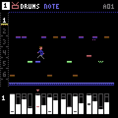
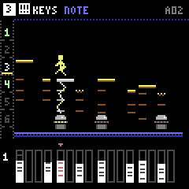
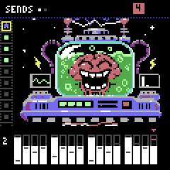
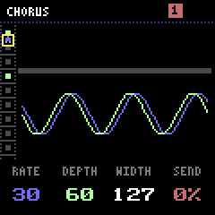
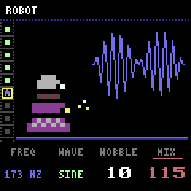
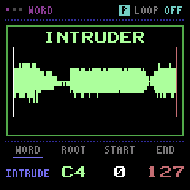
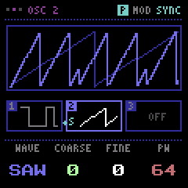
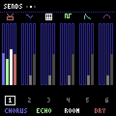

EVIL
GENIUS
A SID groovebox that talks, for the M-VAVE FM-1.
Six tracks of SID chip, a speech synthesizer that says what you type, per-step sound locks and a tower of eight effects. Free and open source. Your FM-1 keeps its hardware; this replaces what runs on it, and you can go back.
THE MISSION
SID VOICES
Each track is a SID: three oscillators, pulse width, ring and sync, the filter with its routing, eight voices across the FM-1's two cores.
IT TALKS
Words are spoken on the unit by SAM, played as samples through the volume register as C64 games did, and fed through the SID's filter. Type your own.
STEP LOCKS
Hold a step and turn a knob: that step keeps its own sound, word, level, pan or effect send. Chance, conditions, ratchets and micro-timing per step.
FX TOWER
Ride the lift between CHORUS, ECHO, ROOM, CRUSH, ROBOT, WARP, GLITCH and TV. Every track has its own send into each floor.
THE ROOM
Your pattern is a room: notes are platforms, the agent runs the playhead, robots guard the steps you lock. Stay away from the sentries.
PLAYS WITH OTHERS
USB and Bluetooth MIDI, USB audio to the computer, MIDI effects per track (arp, chance, harmonise, scale), four projects and 128 presets of your own.
SURVEILLANCE









BEFORE YOU GO IN
- This is a beta, made by one person for fun. It has been played on real FM-1s, not on many.
- Installing replaces M-VAVE's firmware and overwrites the flash where other firmwares keep their data. Back that up first. M-VAVE's firmware can be put back from the install page.
- The playing guide covers every button. Bugs and wishes go to the issues.